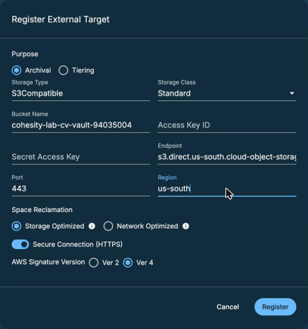
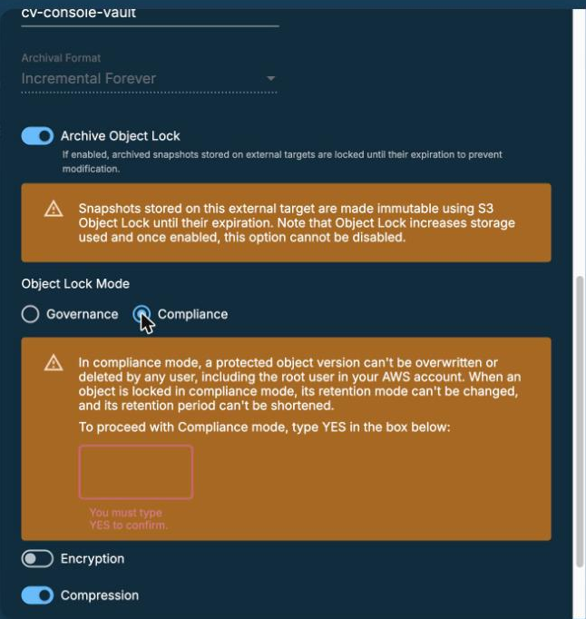
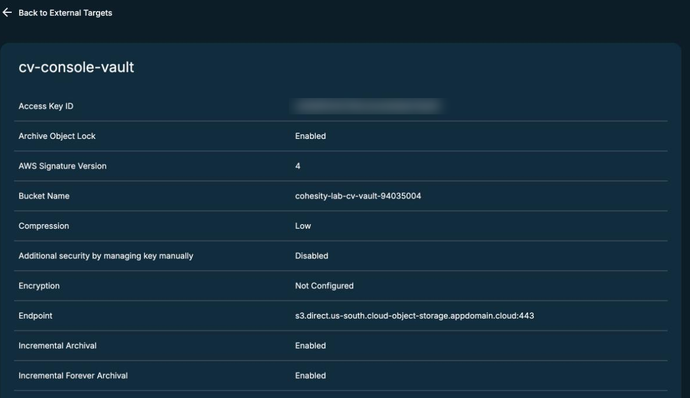
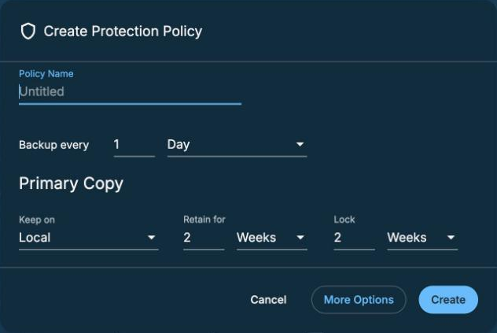
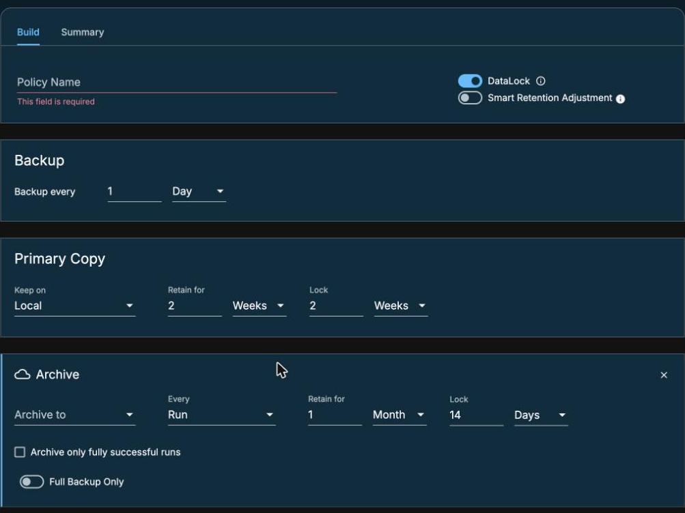
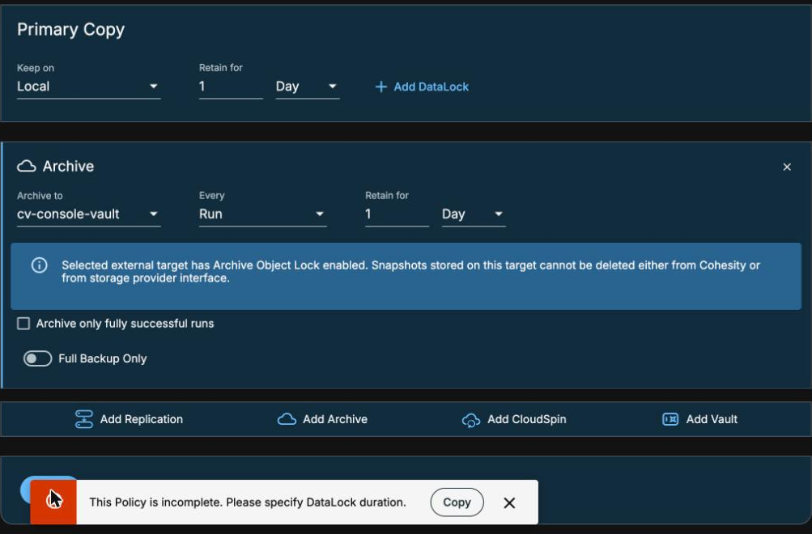
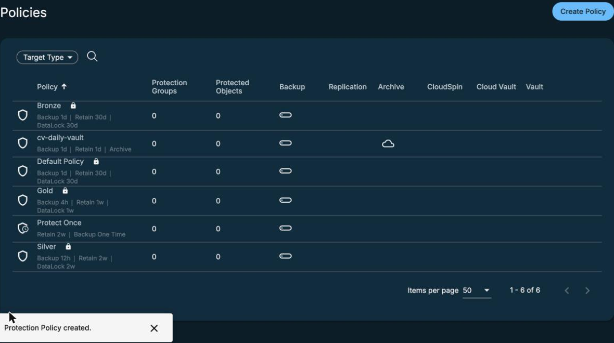

Add the vault as an external target
By the end you can register a Cyber Vault in the Data Protect console, name the two defaults that go against what the setup needs, and fix a policy that will not create.
Northgate Freight is a made-up haulier. It already backs up with Defender Data Protect, and it has made its vault. Now the cluster must be able to archive to it.
The console screens come from our lab on 10 November 2026, in the Data Protect console of a 7.4.1 cluster, with a vault made as in unit 2.2.
Terms used. S3-compatible: speaks the same request format as Amazon's S3 storage. Snapshot: a saved copy of data as it was at one point in time. Archive Object Lock: the Data Protect switch that makes it lock each archived object; it cannot be switched off again. DataLock: a Data Protect setting that locks a backup copy so that it cannot be deleted until its lock ends. Governance mode: a weaker lock than Compliance mode; a user with the right permission can remove it with the bypass header.
Target, policy, key
An external target is a place where the cluster keeps archive copies. After you add the vault as one, a policy can send backups to it.
Which key do you paste into the registration form?
Show the answer
Give the write key to the backup cluster and keep the read key apart.
In the policy builder you can click Add Archive or Add Vault. Which one sends data to your Cyber Vault?
Show the answer
Add Vault is Cohesity's own vault service. Your target is an archive target.
Which defaults are wrong?
The Register External Target form opens with some switches already set. Two of them go against what Northgate needs.
Which two defaults go against what the setup needs?
Show the answer
Switch Archive Object Lock on, and switch Encryption off. Keep Compression on. The register form keeps HTTPS and AWS Signature Version 4 as they are (10 November 2026).
Why switch Encryption off?
Show the answer
With Cohesity-managed keys no other cluster can read the archive later. Module 4 reads the archive from a new cluster.
Register the target
These screens come from the Data Protect console in our lab. Click where you would click. After two misses the right place is marked.

The form is open. Which field takes the vault's name?
Show where
Right. The vault's name goes in Bucket Name. The us-south direct endpoint goes in Endpoint, with port 443 and region us-south. The write key goes in Access Key ID and Secret Access Key.

Which switch must you turn on? The warning says it cannot be turned off again.
Show where
Right. Archive Object Lock. Its mode starts at Governance. Choose Compliance and type YES in the box. Then switch Encryption off and click Register.

The target is registered. Which row confirms that encryption is off?
Show where
Right. Encryption says Not Configured. The page also lists the Access Key ID in plain text (blurred here), so keep it off shared screens.
Make a policy
Open Data Protection, then Policies, then Create Policy. The dialog fills in values you did not choose.

The dialog opens with Retain 2 Weeks. Which field holds the lock it has filled in?
Show where
Right. The Lock field says 2 Weeks. Type a name, set Retain for to 1 Day, point at the Lock field and click the minus sign that appears, then click More Options.

You clicked Add Archive. Which field has filled in a 14-day lock?
Show where
Right. The archive section fills in Retain 1 Month and Lock 14 Days. Pick the target in Archive to. For a target with object lock the Lock field goes away. Set Retain for to 1 Day.
"This Policy is incomplete"
Northgate's admin has picked the target and set Retain for to 1 Day. The Lock field has gone. She clicks Create.

Create fails. Where does the console say why?
Show where
Right. The message at the bottom reads "This Policy is incomplete. Please specify DataLock duration."

The policy now exists. Which icon shows that it archives?
Show where
Right. The cloud icon under Archive. The new policy has no lock symbol, unlike the built-in ones.
What fixes the error?
Show the answer
DataLock stays on after the Lock field is removed, and Create then fails. With it off, Create works: "Protection Policy created." (10 November 2026).
The note in the archive section says snapshots on this target cannot be deleted. By whom?
Show the answer
The note reads: "Snapshots stored on this target cannot be deleted either from Cohesity or from storage provider interface."
Watch for this. The two defaults, Archive Object Lock off and Encryption on, cause no error. They only go against what the setup needs. Check both before you click Register. Archive Object Lock cannot be switched off again.
Three questions
Which key goes into the Access Key ID and Secret Access Key fields?
Show the answer
The write key. The read key is kept apart.
Which two defaults do you change on the registration form?
Show the answer
Lock on, in Compliance mode with YES typed. Encryption off, so another cluster can read the archive later.
Create says "This Policy is incomplete. Please specify DataLock duration." What do you do?
Show the answer
With DataLock off, the policy was created in our lab on 10 November 2026.
The cluster can reach the vault
Register the vault as S3Compatible with the write key. Turn Archive Object Lock on in Compliance mode, and turn Encryption off. In the policy, use Add Archive, and switch DataLock off if Create says the policy is incomplete.